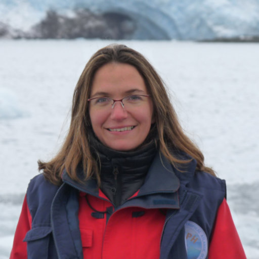
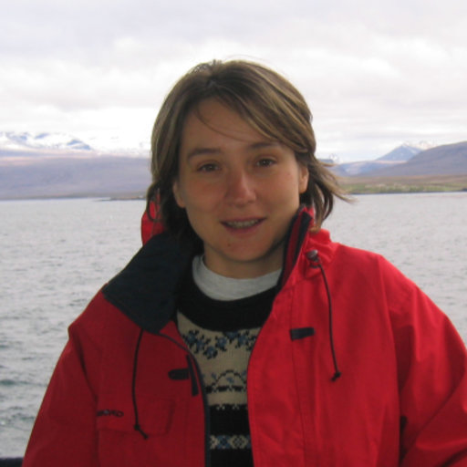

Notre réseau — 02
L'équipe
Des professionnels engagés au service de la science et de l'environnement.
Des professionnels engagés au service de la science et de l'environnement.
L'association fonctionne grâce à ses membres permanents qui s'investissent depuis des années, mais aussi grâce au soutien de tous les membres contributeurs qui nous assistent ponctuellement.

Chercheuse en Chimie Atmosphérique Globale et maître de conférence à l'Université Clermont Auvergne, elle est aussi enseignante-chercheuse au Laboratoire de Météorologie Physique (LaMP) et à l'Observatoire de Physique du Globe de Clermont-Ferrand (OPGC). C'est aussi une aventurière, associant toujours la science à ses expéditions.

Directrice de recherche CNRS au Laboratoire des Sciences du Climat et de l'Environnement LSCE, elle est aussi responsable de l'équipe de chimie atmosphérique expérimentale. Elle fait partie de l'équipe depuis le début, aidant à façonner les programmes scientifiques de Wings for Science.

Diplômé en météorologie, Ernest a travaillé pendant de nombreuses années à l'aéroport international de Luxembourg en tant que météorologue. C'est aussi un pilote privé et un enseignant en météorologie aéronautique.

Cette globetrotteuse vient de Pologne, a vécu aux États-Unis, puis a travaillé en Slovaquie, en Autriche et au Luxembourg. Fondatrice de Fail Learn Succeed Forum, elle sait construire et animer des communautés.

Médecin aux multiples spécialités, Rébecca travaille en cabinet privé ainsi qu'aux urgences hospitalières. Elle est également élue au Conseil de l'Ordre. Elle suit les pilotes lors de chaque expédition.
Grande ONG basée à Paris, portant le statut d'utilité publique. Son expérience globale en collaboration locale est très utile pour nos objectifs.
Équipe internationale basée en Belgique, spécialisée dans la logistique en milieux extrêmes. Ils sont capables de sortir des personnes et du matériel de n'importe où !